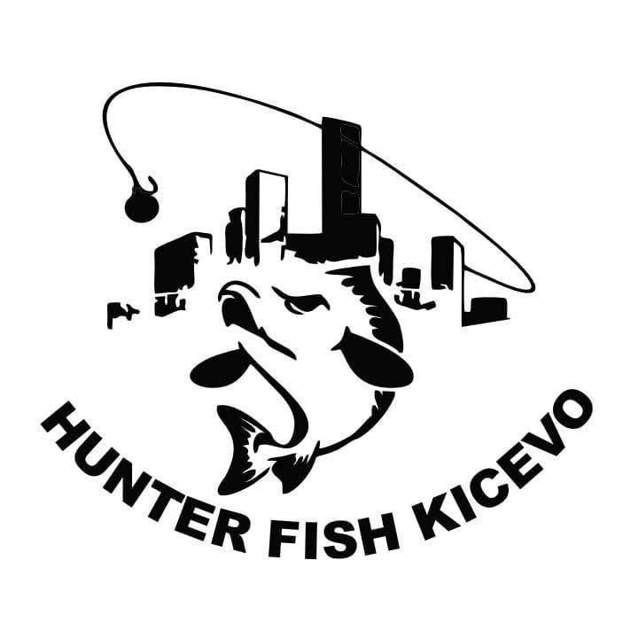
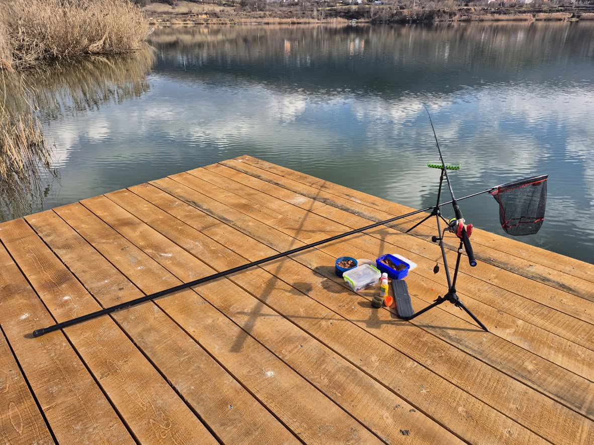
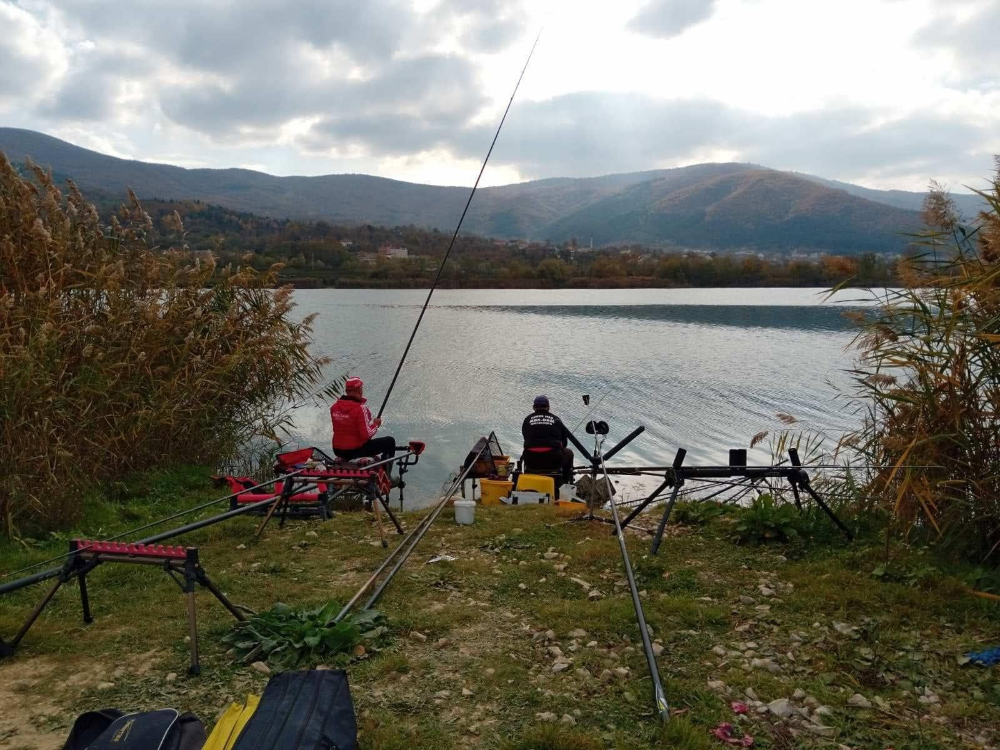
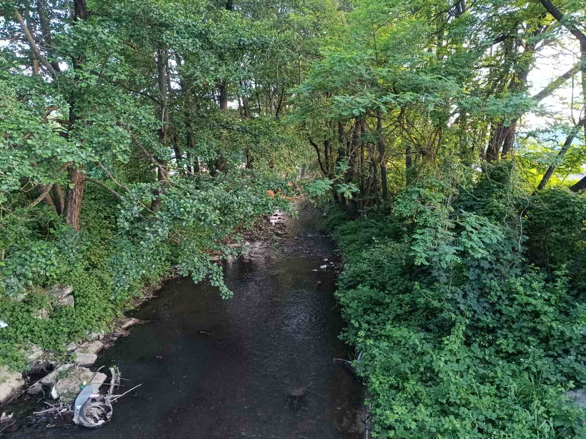

Fshati Garanë e posedon edhe lumin.
Lumi i fshatit Garanë rrjedh pranë vendbanimit dhe është një nga bukuritë natyrore të zonës. Uji i pastër dhe natyra përreth e bëjnë atë një vend të përshtatshëm për shëtitje, pushim dhe rekreacion. Gjatë pranverës dhe verës lumi është veçanërisht i bukur, pasi rrethohet nga gjelbërimi dhe peizazhet malore.
